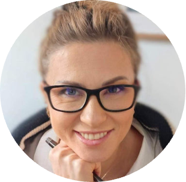
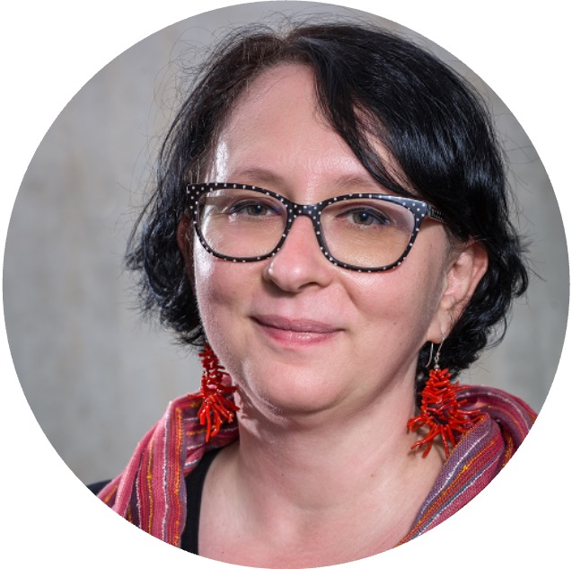
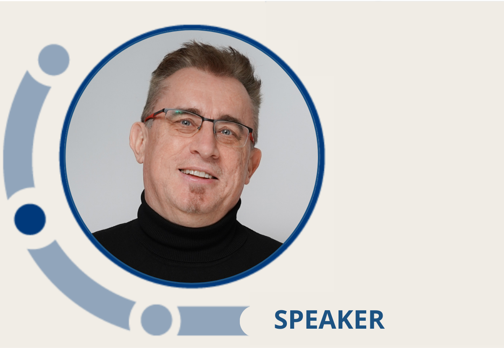

EDIH – Wsparcie dla Małych i Średnich Przedsiębiorstw w pełnym wykorzystaniu potencjału cyfryzacji
O Programie EDIH
Dlaczego warto dołączyć?
-
Otrzymasz szczegółową ocenę dojrzałości cyfrowej i innowacyjności Twojej firmy.
-
Zyskasz dostęp do praktycznego wsparcia ekspertów, które pomoże Ci skutecznie wykorzystać technologie cyfrowe.
-
Przygotujesz swój zespół na wyzwania związane z cyfryzacją dzięki dedykowanemu coachingowi.
-
Wzmocnisz siebie i zespół w podejściu do zmiany związanej z rozwojem cyfrowym.
-
Znajdziesz najlepsze rozwiązania technologiczne dla swojej firmy przy merytorycznym wsparciu ekspertów.
-
Wzmocnisz pozycję swojej firmy na rynku dzięki wdrożeniu efektywnych i dobrze dobranych narzędzi cyfrowych.
-
Otrzymasz Raporty i Certyfikaty, które mogą znacząco wzmocnić aplikacje o środki finansowe w licznych konkursach krajowych i regionalnych, takich jak m.in.:
- „Automatyzacja i Robotyzacja w MŚP”,
- „Wsparcie MŚP w obszarze cyfryzacji - Bony na cyfryzację”,
- „Dig.IT. Transformacja cyfrowa”,
- „DIGITRANS” – wsparcie cyfryzacji mikro, małych i średnich przedsiębiorstw (MMŚP),
- „Rozwój MŚP w obszarze cyfryzacji i Przemysłu 4.0” (województwo małopolskie),
- „Cyfryzacja lubelskich MŚP” (województwo lubelskie),
- „Cyfrowe MŚP” – Fundusze Europejskie dla Warmii i Mazur, ogólnopolska „Ścieżka SMART”.
-
Udział w programie EDIH może wesprzeć Twoją firmę w ubieganiu się o finansowanie w ramach planowanych 2,8 mld zł z KPO przeznaczonych na transformację cyfrową w formie pożyczek dla firm.
-
Otrzymasz Raporty i Certyfikaty, które mogą być cennym narzędziem przy ubieganiu się o środki z programu HORYZONT EUROPA, wspierający projekty transformacji cyfrowej na poziomie międzynarodowym.
-
Udział w programie EDIH może zwiększyć szanse twojej firmy na uzyskanie środków z funduszy inwestycyjnych, pomagając efektywnie zaprezentować potencjał Państwa firmy i jej gotowość do cyfrowej transformacji.
- Raporty dotyczące oceny procesów innowacyjnych oraz gotowości cyfrowej
- Certyfikaty potwierdzające udział w projekcie EDIH, w tym zaświadczenia z DMA, IHC oraz zindywidualizowanego Coachingu Biznesowego.

Jak pracujemy w ramach programu EDIH?
W ramach programu EDIH pracujemy w oparciu o 4 strategiczne narzędzia:
Digital Maturity Assessment (DMA)
Kompleksowa ocena dojrzałości cyfrowej Twojej firmy. Zidentyfikujemy mocne strony oraz obszary wymagające wzmocnienia, abyś mógł skutecznie wdrażać nowe technologie, dopasowane do specyfiki swojego modelu biznesowego. Dzięki temu dowiesz się, gdzie warto inwestować, by osiągnąć największe efekty.

Innovation Health Check (IHC)
Analiza innowacyjności Twojej firmy, która pozwoli ocenić gotowość na wprowadzenie nowych rozwiązań technologicznych. Sprawdzimy, jak Twoja firma może najlepiej wykorzystać innowacje, by zwiększyć swoją konkurencyjność na rynku.

Business Model Canvas
Wspólna analiza modelu biznesowego Twojej firmy, która pokaże, w jakich obszarach cyfryzacja przyniesie największe korzyści. Zidentyfikujemy kluczowe procesy i wskażemy, jak zastosować narzędzia cyfrowe, aby zwiększyć efektywność działania i generować większe zyski.

Coaching Biznesowy w zakresie procesu cyfryzacji firmy
Nasze wsparcie to nie tylko technologia, ale również rozwój kompetencji miękkich kluczowych pracowników i pracowniczek Twojej firmy. Coaching biznesowy pomoże Twojemu zespołowi efektywnie korzystać z narzędzi cyfrowych i lepiej zarządzać procesami cyfryzacji, co przełoży się na realne korzyści dla Twojej firmy.
Dodatkowe wsparcie, które otrzymasz:
Doradztwo w zakresie pozyskiwania funduszy
Pomożemy Ci zdobyć środki finansowe na opracowanie i wdrożenie innowacyjnych produktów, usług lub procesów technologicznych.
Pomoc w znalezieniu dostawców rozwiązań cyfrowych
Dobierzemy odpowiednich partnerów technologicznych, którzy najlepiej odpowiedzą na potrzeby Twojej firmy.
Ekspercka wiedza
Program prowadzą eksperci i naukowcy z DELab Uniwersytet Warszawski oraz Enterprise Europe Network.
Dodatkowe indywidualne wsparcie coachingowe
Po zakończonym programie możesz skorzystać z 1,5 h dodatkowego indywidualnego wsparcia coachingowego.
Dzięki finansowaniu programu przez Komisję Europejską w ramach pomocy de minimis, nasze wsparcie, analizy i coaching są dostępne bez żadnych kosztów dla Twojej firmy.
FAQ
- Co to jest Pomoc de minimis?
Pomoc de minimis to wsparcie dla przedsiębiorców bez formalności na poziomie UEPomoc de minimis to szczególny rodzaj wsparcia dla przedsiębiorców, który nie wymaga zgłoszenia do Komisji Europejskiej. Dzięki temu stanowi szybszy i bardziej dostępny sposób na finansowanie m.in. szkoleń, inwestycji czy ulg podatkowych.Unia Europejska co do zasady ogranicza udzielanie wsparcia publicznego, aby chronić zasady wolnego rynku. Jednak pomoc de minimis, objęta limitami określonymi w Rozporządzeniu Komisji Europejskiej 2023/2831, jest wyjątkiem, który pozwala na realizację kluczowych projektów bez konieczności skomplikowanej zgody KE.Przedsiębiorcy mogą skorzystać z tej formy wsparcia na wiele sposobów – od zwolnień podatkowych, przez umorzenie odsetek, po dofinansowania szkoleń czy inwestycji. Ważne, aby monitorować otrzymaną kwotę wsparcia, która nie może przekroczyć określonych limitów. Informacje o wykorzystanym limicie można uzyskać w Urzędzie Ochrony Konkurencji i Konsumentów.Pomoc de minimis to szybkie i elastyczne narzędzie, które pozwala przedsiębiorcom na rozwój, bez obciążających formalności związanych z pomocą publiczną.- Czy moja firma kwalifikuje się jako MŚP? Sprawdź kryteria!
Małe i średnie przedsiębiorstwa (MŚP) to kręgosłup gospodarki, ale czy Twoja firma spełnia formalne wymagania, by należeć do tej grupy? Oto kluczowe kryteria, które musisz spełnić:Liczba zatrudnionych pracowników- Mikroprzedsiębiorstwo: mniej niż 10 pracowników,
- Małe przedsiębiorstwo: od 10 do 49 pracowników,
- Średnie przedsiębiorstwo: od 50 do 249 pracowników.
Obroty roczne lub suma bilansowa- Mikroprzedsiębiorstwo: roczny obrót lub suma bilansowa do 2 mln EUR,
- Małe przedsiębiorstwo: roczny obrót lub suma bilansowa do 10 mln EUR,
- Średnie przedsiębiorstwo: roczny obrót do 50 mln EUR lub suma bilansowa do 43 mln EUR.
Niezależność firmy-
Aby zakwalifikować się jako MŚP, firma musi być niezależna – oznacza to, że nie może być własnością w ponad 25% przez inne przedsiębiorstwo, które nie spełnia tych kryteriów (z pewnymi wyjątkami, np. w przypadku uczelni, inwestorów publicznych czy funduszy venture capital).
-
Dlaczego coaching jest nieodzowny w efektywnym procesie cyfryzacji?
W procesie cyfryzacji, coaching odgrywa kluczową rolę. To narzędzie, które wspiera nie tylko wdrożenie technologii, ale przede wszystkim harmonijną adaptację całego zespołu do zmian. Cyfryzacja niesie za sobą zarówno szanse jak i wyzwania. Obawy o utratę pracy, konieczność nauki nowych technologii czy stres związany z nieznanym, to częste reakcje wśród pracowników. W tym kontekście coaching daje wsparcie i pozwala przeprowadzić proces wdrażania innowacji cyfrowych w sposób efektywny.- Jakie są główne cele coachingu biznesowego?Coaching biznesowy jest nastawiony na osiąganie wyznaczonych celów. W kontekście cyfryzacji, mogą to być:
- Rozwój przywództwa w cyfrowym środowisku - coaching pomaga liderom dostosować się do nowej rzeczywistości, rozwijając umiejętności zarządzania zespołami w erze technologii i innowacji;
- Wsparcie w zarządzaniu zmianą - cyfryzacja często wiąże się z wyzwaniami adaptacyjnymi. Coaching przygotowuje kadra zarządzającą i pracowników do skutecznego przejścia przez zmiany, minimalizując opór i lęk przed nowościami;
- Zwiększenie efektywności operacyjnej - coaching wspiera w optymalizacji procesów zarządzających oraz w lepszym wykorzystaniu narzędzi cyfrowych, co przekłada się na wzrost efektywności i lepsze wyniki biznesowe;
- Rozwijanie i budowanie kompetencji przyszłości (cyfrowych) -coaching pomaga rozwijać kluczowe umiejętności technologiczne wspierające lepsze zrozumienie i wykorzystanie nowych narzędzi oraz rozwiązań cyfrowych;
- Zarządzanie stresem i emocjami - cyfryzacja może być źródłem stresu i niepewności. Coaching pomaga radzić sobie z emocjami, budować pewność siebie oraz tworzyć pozytywne podejście do zmian.
-
Wzmacnianie kultury innowacyjności - coaching sprzyja tworzeniu w firmie otwartości na innowacje, promując podejście, które stawia na kreatywne myślenie i elastyczność w obliczu wyzwań technologicznych.
-
Jak przebiega sesja coachingu biznesowego?
Coaching biznesowy to proces wymagający zaangażowania zarówno ze strony coacha jak i managera:- ma charakter celowy,
- jest ukierunkowany na osiągnięcie określonych i zaplanowanych albo pożądanych rezultatów,
- skupia się na rozwoju umiejętności i kompetencji liderow oraz menedżerów w kontekście nowoczesnego zarządzania.
W obszarze cyfryzacji pełni on szczególnie istotną rolę, pomagając organizacjom lepiej zarządzać zmianą, wprowadzać nowe technologie oraz budować zespoły gotowe na przyszłość.- Jakie są korzyści coachingu w procesie cyfryzacji?
Coaching biznesowy to proces, który pozwala firmom lepiej radzić sobie z wyzwaniami wynikającymi z cyfryzacji zapewniając, że zmiany są przemyślane, zrównoważone i uwzględniają potrzeby pracowników. Dzięki coachingowi cyfryzacja staje się procesem, który nie tylko wprowadza innowacje ale również buduje silne zaangażowane zespoły gotowe na przyszłość.Kontakt
Jeśli jesteś zainteresowana/y uczestnictwem w programie EDIH, zgłoś swoją firmę:- mail: edih@delab.uw.edu.pl
- telefon: 793 443 869
Zespół

Prof. UW dr hab. Katarzyna Śledziewska
Dyrektorka Zarządzająca DELab UW, Kierowniczka Katedry Transformacji Technologicznej na Wydziale Nauk Ekonomicznych Uniwersytetu Warszawskiego. Specjalistka w dziedzinie zmian organizacyjnych i wdrażania innowacji cyfrowych. Bada kompetencje przyszłości na zmieniającym się rynku pracy oraz przemiany wynikające z wdrażania rozwiązań opartych na AI w przedsiębiorstwach i organizacjach. Jest Certyfikowaną Practitioner i Master Practitioner NLP, posiadającą międzynarodowe certyfikaty IANLP i IN, a także ukończyła kursy MBA.
Grażyna Szabuniewicz
Certyfikowana Coach Kognitywna Life & Business, Praktyk i Master NLP , Trener NLP, właścicielka firmy coachingowej mindShift point.Ma bogate doświadczenie biznesowe z 25 letnią praktyką zarówno w dużych firmach FMCG będących leaderami na rynku, jak i MŚP na stanowiskach menedżerskich w obszarach sprzedaży i marketingu. Specjalizuje się w budowaniu strategii biznesowych dla menedżerów i właścicieli MŚP, wyznaczaniu celów i ich realizacji kładąc duży nacisk na zmianę przekonań i nabywanie nowych kompetencji.
Prof. UW dr hab. Renata Włoch
Dyrektorka Naukowa DELab UW, Kierowniczka Katedry Socjologii Cyfrowej na Wydziale Socjologii UW. Specjalizuje się w badaniach nad transformacją cyfrową organizacji, zmianami na rynku pracy i w systemie edukacji. Autorka licznych raportów i ekspertyz dla biznesu oraz instytucji publicznych, posiadająca szerokie doświadczenie w analizie procesów globalizacyjnych i cyfrowych.

Dr Agnieszka Pugacewicz
Specjalistka zarządzająca obszarem Entrepreneurship & Academia, prowadzi badania nad gospodarką cyfrową oraz innowacyjnymi sektorami. Jej zainteresowania obejmują otwartość danych publicznych i naukowych, współpracę interdyscyplinarną, rozwój startupów, przedsiębiorczość oraz transfer wiedzy między uczelniami a biznesem. Aktywnie wspiera organizacje pozarządowe – społeczne, prawne i kulturalne – działając w ich zarządach. Jej doświadczenie to idealne wsparcie dla firm poszukujących innowacyjnych rozwiązań oraz skutecznej współpracy ze środowiskiem akademickim i pozarządowym.
Dominik Jankowski
Kierownik projektów EEN. Ekspert w zakresie innowacji, internacjonalizacji oraz wsparcia dla sektora MŚP. Certyfikowany konsultant IMP³rove – narzędzia służącego ocenie zdolności firm do zarządzania innowacjami. Swoje doświadczenie zdobywał m.in. w Uniwersyteckim Ośrodku Transferu Technologii Uniwersytetu Warszawskiego, gdzie realizował projekty finansowane z funduszy strukturalnych, Programu Ramowego na rzecz Konkurencyjności i Innowacji (CIP) oraz 7. Programu Ramowego UE. Jego bogata wiedza i praktyczne podejście czynią go zaufanym partnerem w rozwoju innowacyjności i konkurencyjności firm na rynku krajowym i międzynarodowym.
Tomasz Krawczyk
Ekspert w analizach finansowych i umiędzynarodowieniu biznesu. Doktor nauk ekonomicznych specjalizujący się w ekonometrii finansowej, rynkach kapitałowych i modelowaniu ryzyka w projektach inwestycyjnych. W ramach EEN wspiera przedsiębiorstwa w ekspansji na rynki zagraniczne, ocenie wartości niematerialnych i prawnych, a także w analizach biznesowych i finansowych. Jego doświadczenie obejmuje wsparcie w obszarze umiędzynarodowienia biznesu oraz rozwoju innowacji produktowych, procesowych i usługowych.
Wojciech Nowakowski
Ekspert w transformacji cyfrowej i umiędzynarodowieniu biznesu. Specjalista wspierający firmy w ramach projektu Enterprise Europe Network. Posiada bogate doświadczenie w doradztwie związanym z transformacją cyfrową oraz ekspansją na rynki zagraniczne. Jako wieloletni przedsiębiorca, doskonale rozumie wyzwania i potrzeby firm, co pozwala mu skutecznie wspierać ich rozwój oraz pomagać w osiąganiu międzynarodowych sukcesów.
#FunduszeUE